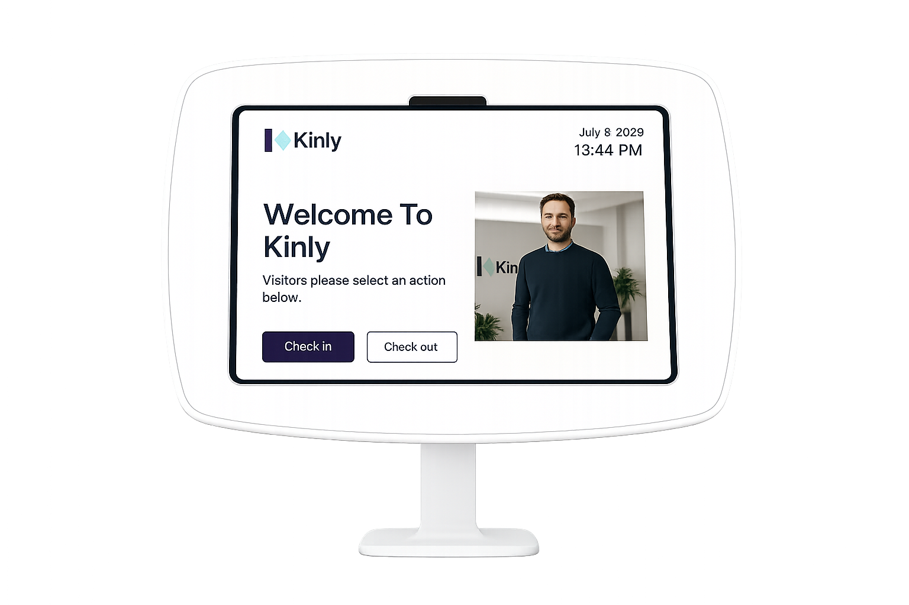

Visitor Check-In

Use the visitor kiosk below to register your arrival.
-
Tap Check In
-
Enter your visitor details
-
Select your host
-
Your host will be notified automatically
-
Please wait in the visitor lounge until you are collected